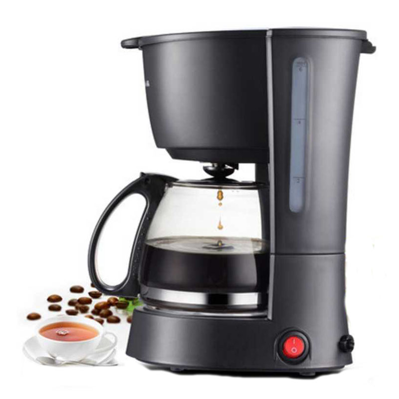
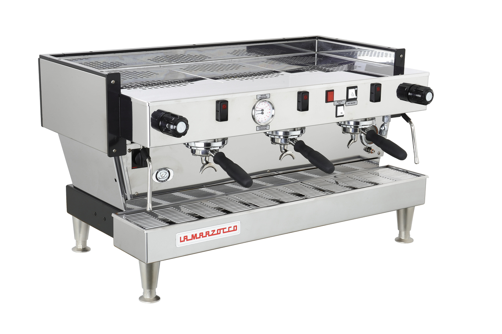
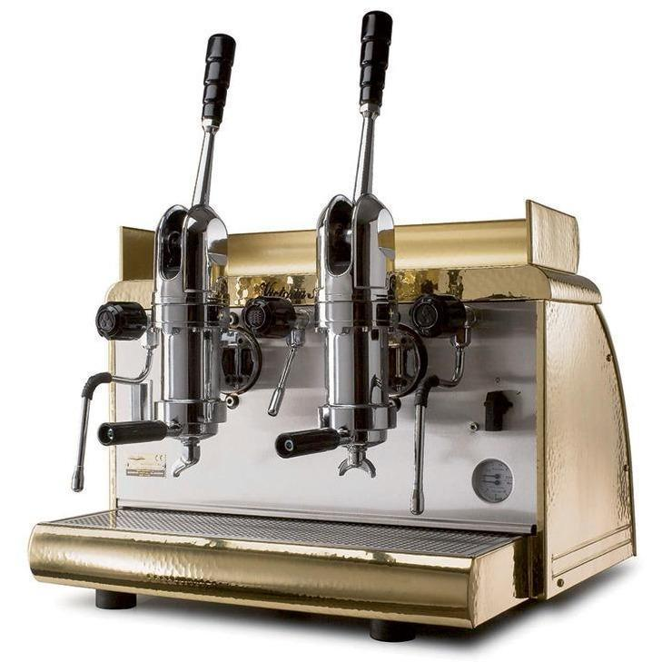
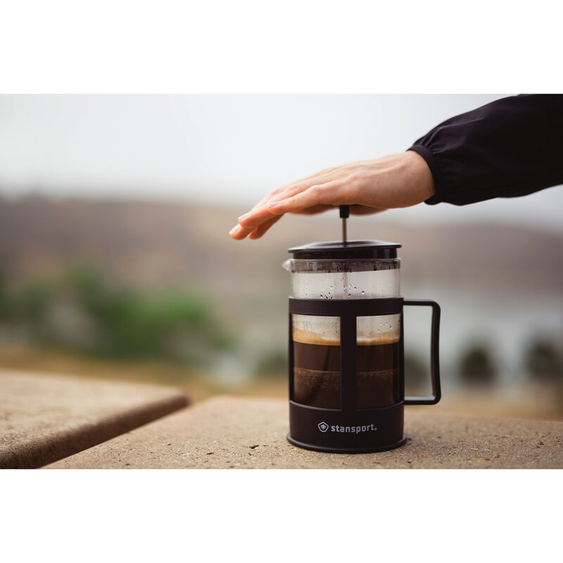

Here are some ways to prepare coffee
Pour Over
As basic as it gets, hot water is poured over ground coffee, with a filter. The Kalita Wave supports the filter paper and water.
Visually the same as the Kalita, though it does have a few fundamental differences. Mainly the geometry of the cone, as well as the bottom of it.

These machines mimic the pour over action and automate it, allowing the user to multi-task.
Espresso

At its basics, espresso is created by forcing water thorugh finly ground coffee upwards of 9bars or 130pounds per square inch. The resulting liquid is called espresso. Any coffee can be prepared in an expresso machine to make espresso. Here a pump is utilized to generate the pressure.

Where espresso all started. The lever, actuated by the user, is what generates the pressure on the coffee. Because of this the design is inherently simpler. This is where the phrase 'pull a shot' comes from.
Immersion

Ground coffee and water are steeped together for a specified amount of time. The container the liquid is in is then pressed, to nearly stop the presing process, seperating the coffee ground from the liquid.